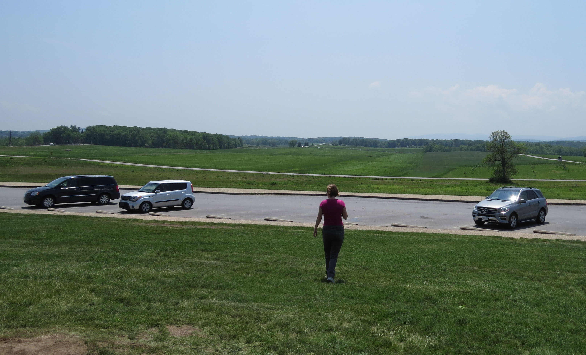
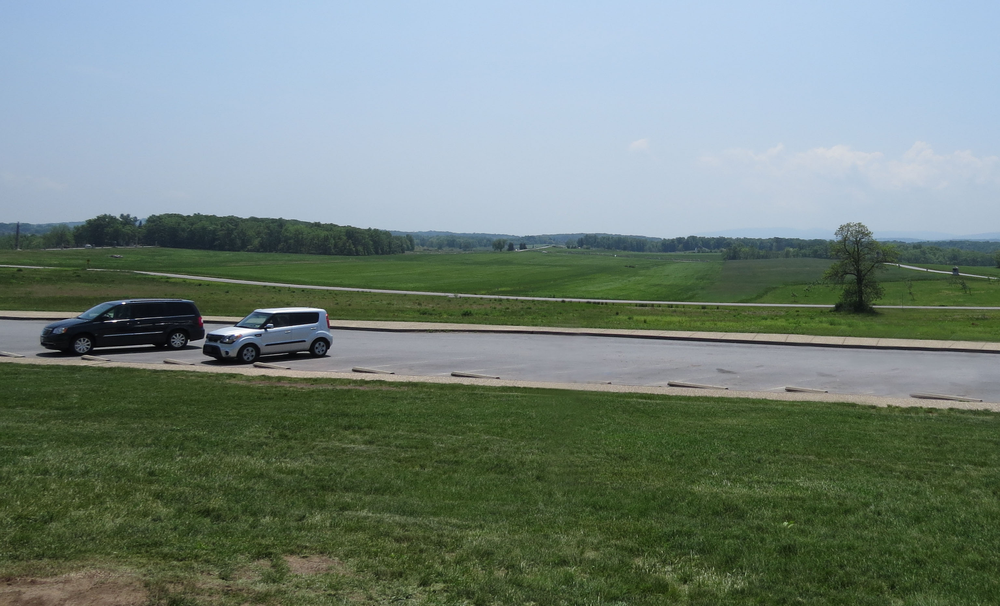
In the above image I used Photoshop's "Clone Stamp tool" to slowly paint the surrounding area in place of my mom and the SUV. I had to redraw the sidewalk as it turned out to be harder to line up the perspectives then I thought
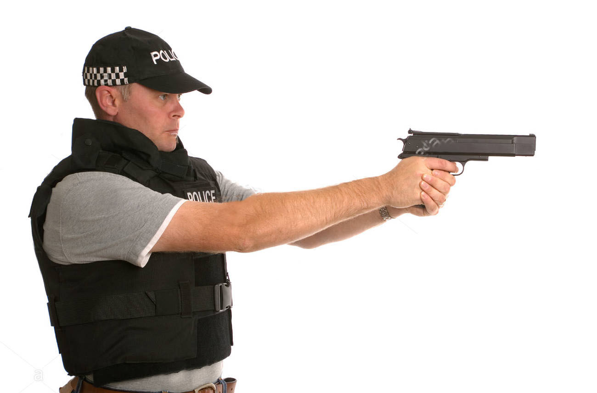
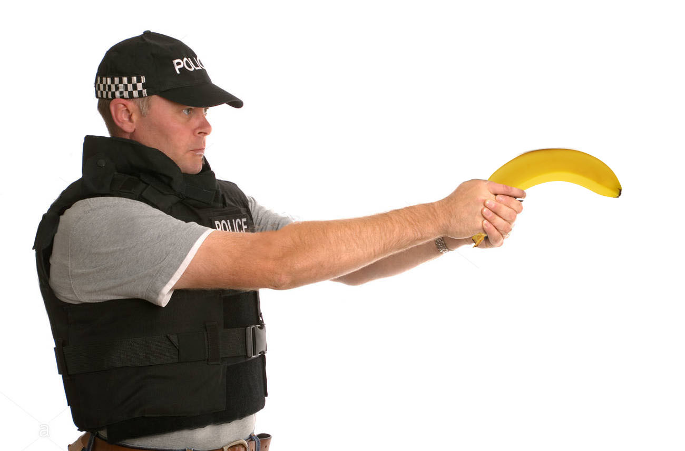
For the compositing task I decided to remove the gun in the cops hand (Had to remove ugly shutterstock watermark first) then I just found an image of a banana, cut it out and placed it over the cops hands while errasing the part of the banana that would be under the hand
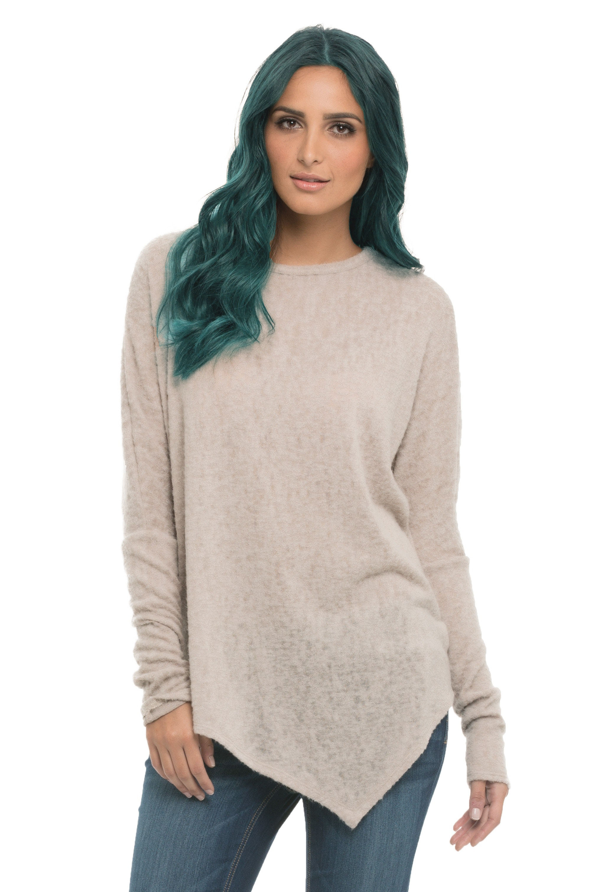
In order to change the womans hair color I used the magnetic laso tool and roughly went around head, then I refined and feathered the edge. Final step was to add a hue adjustment layer.
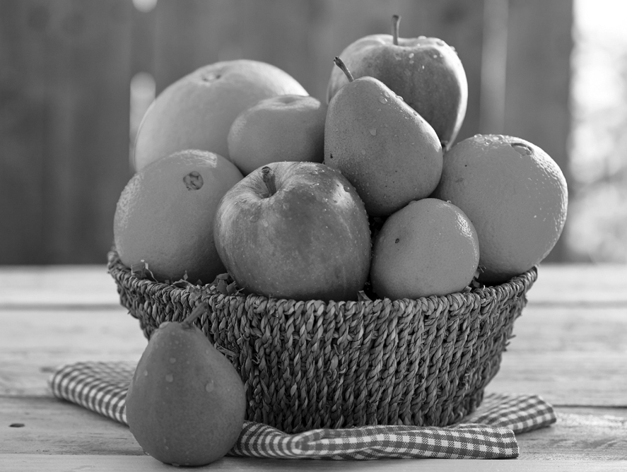
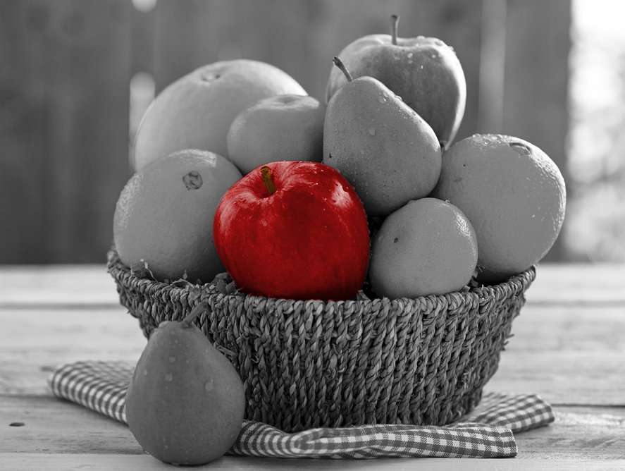
This one was pretty simple, I lasso'd the apple with a similar method to the hair, then just painted with red and a bit of brown and changed the layer mode to "Lighten" The above is my banner, I just added some social media icons and my name. I have never tried to fix an image like this in photoshop before. First I rotated the image to remove the white borders. Then I used the auto level adjustment and then I played around with the different hue and saturation levels until I was satisfied with the amount of red that had been removed without taking away all color.
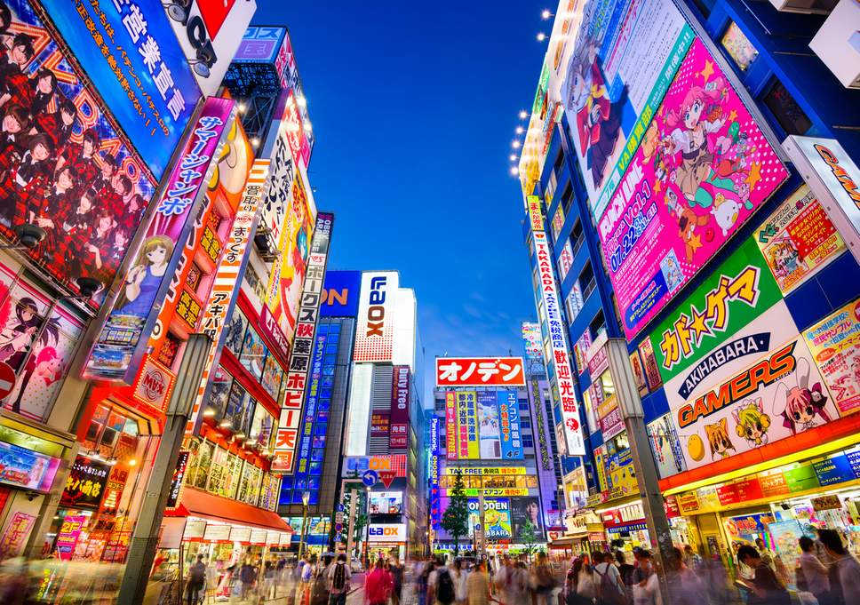
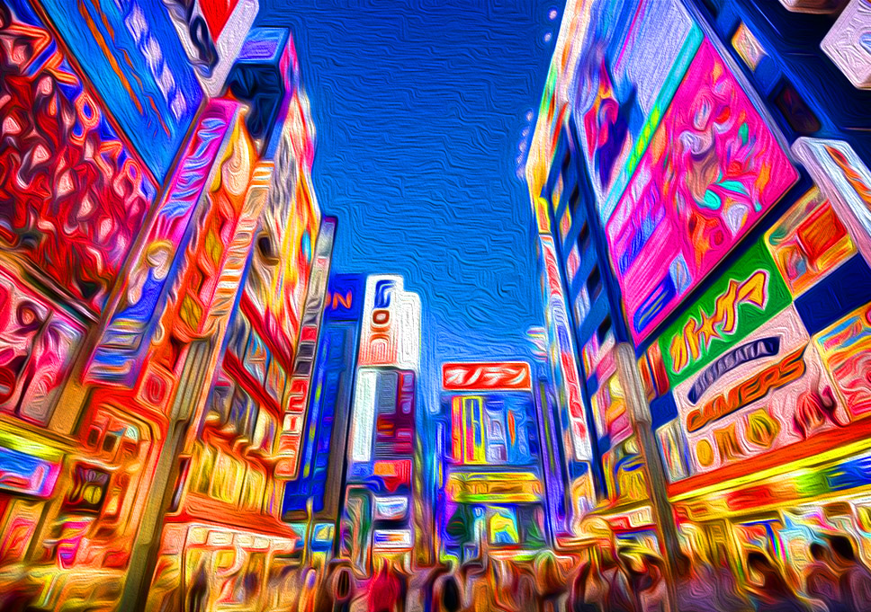
I used a couple photoshop filters and some hue/saturation adjustment to make this photo look like a painting.
 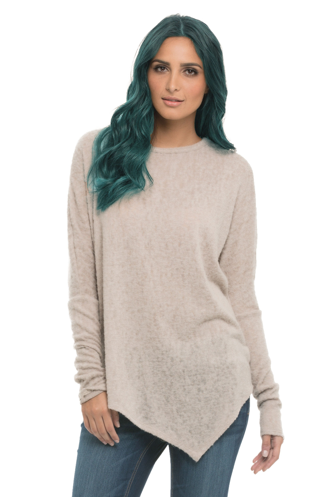
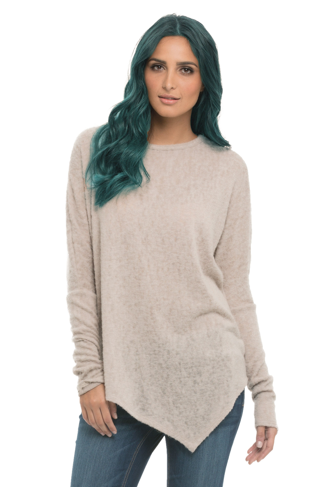